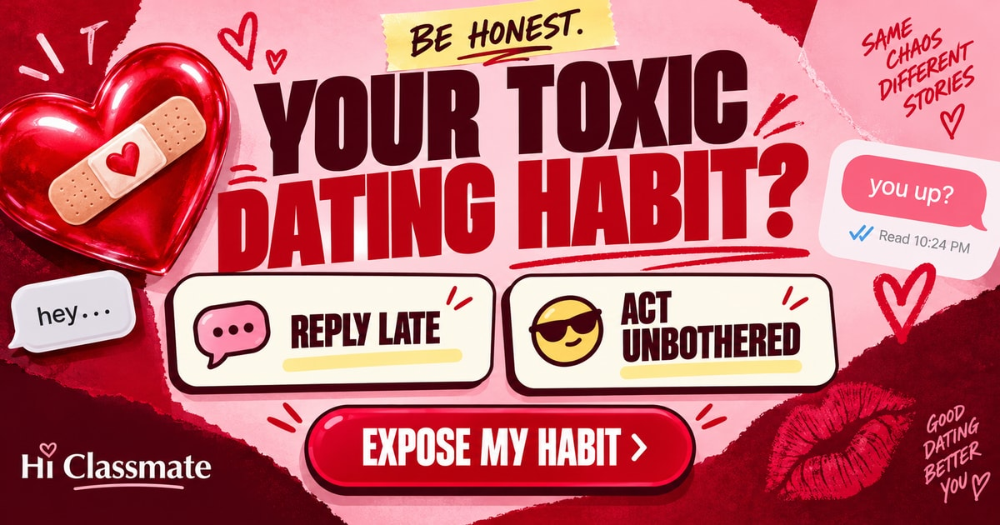

READ RECEIPTS. MIXED SIGNALS. YOU.
What’s your most
toxic dating habit?
Good intentions.
Messy habits.
You call it protecting your peace.
They might call it something else.
YOUR DATING HABIT IS
- Your habit
- How it feels
- Try saying

The problem might be your pattern.
Counting the minutes before replying. Posting a story just to get a reaction. Saying “okay lang” when nothing is okay. Eight familiar dating moments reveal the habit hiding behind your good intentions.
Six habits. Which one feels too familiar?
The Reply Accountant, The Jealousy Director, The Almost Lover, The Silent Punisher, The Exit Planner, or The Fixer. Your result pairs a blunt observation with how that habit can feel to the other person and one sentence to try instead.
How your type match works
Your answers add points to one or two habits. Scores are adjusted for the points available to each habit, and your strongest match becomes your result. The percentage is the share of that habit’s possible points you earned. The same choices always give the same result.
About What’s Your Most Toxic Dating Habit?
An unanswered message, an unclear relationship and the words “I’m fine” can mean very different things to different people. This quiz explores six exaggerated dating habits through eight situations with four possible reactions each. Its focus is the pattern behind a reaction rather than choosing a perfect partner.
How to Play
Pick the answer that sounds like what you might actually do, including the less flattering choices. You can go back and change a response before finishing. The result combines all eight answers and shows a habit, its possible impact and an idea for repair. Share your result to start a conversation, or replay to explore another response pattern.
From a Habit to a Conversation
The useful part is the connection between what you want and how you ask for it. Wanting reassurance, for example, is different from expecting someone to guess why you have gone quiet. Read the repair suggestion alongside the habit description and consider whether either fits a particular situation in your life. The match value describes this quiz’s scoring, not how “toxic” you are as a person. This playful test is not a relationship assessment, and it cannot establish another person’s intentions from a few answers.